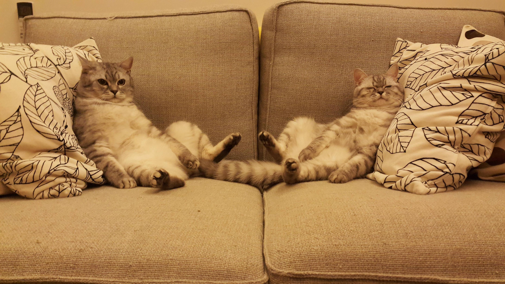
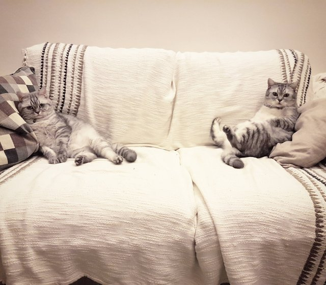
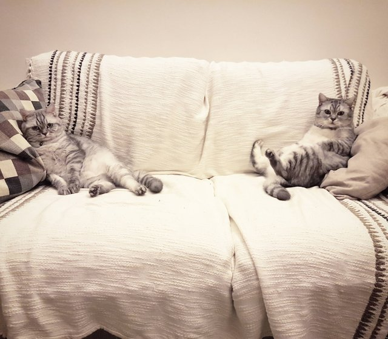
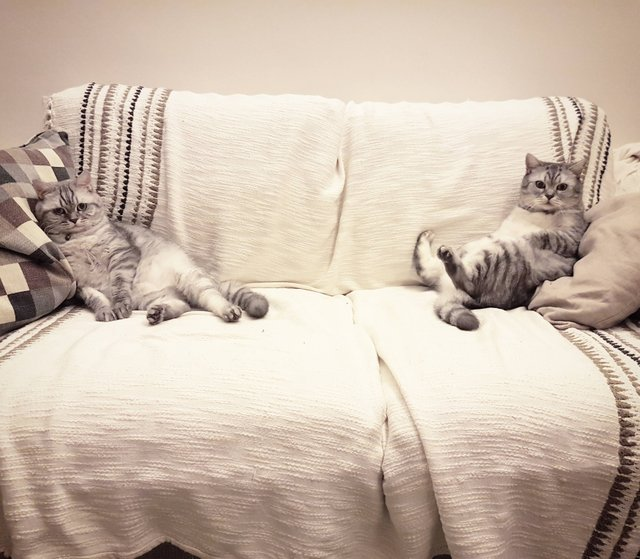
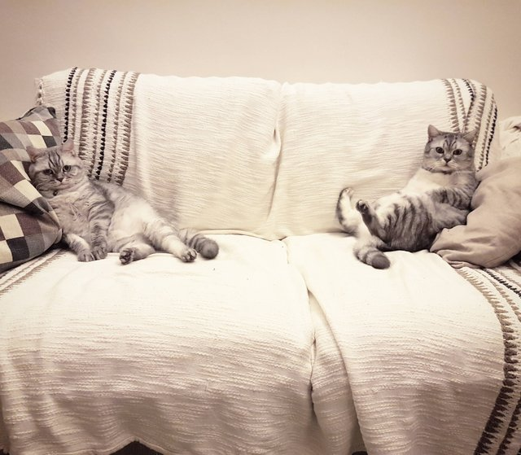

 


Train:

Candidates: 0, 1, 2, 3


Intended concept: There are two cats on the same sofa.
Solution provided by tool:
The chosen answer is 1.
The discriminator is: Exists q0: cat!0. Forall q1: sofa!1. Exists q2: cat!2. And(sitting_on!2!1 left!0!1 right!1!0 right!2!0)